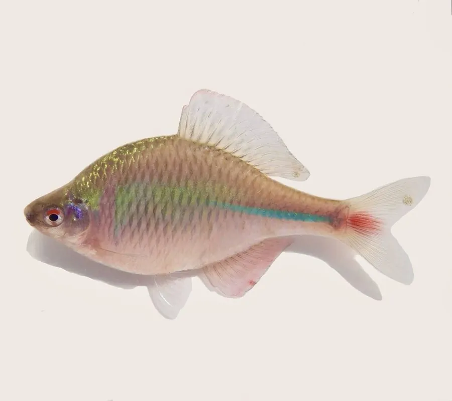

鱼类 · 动物界
高体鳑鲏 Rhodeus ocellatus

中国溪流中的小型鳑鲏，雄鱼繁殖期体色艳丽，雌鱼把卵产进河蚌鳃腔，幼鱼在蚌体内发育，形成独特共生。
- 分类
- 门脊索动物门纲辐鳍鱼纲目鲤形目科鲤科属鳑鲏属
- 栖息环境
- 水草茂密、水流缓慢的溪流、池塘和沟渠
- 地理分布
- 中国长江以南、日本和朝鲜半岛的淡水水域
- 保护级别
- 暂无评估；中国未列入国家重点保护野生动物名录
物种志
高体鳑鲏体呈卵圆形，侧扁而高，头小，口小。雄鱼在繁殖期体色鲜艳，体侧有蓝绿色光泽，腹部和鳍条呈橙红色；雌鱼体色较淡，腹部有产卵管。成鱼体长一般 5–8 cm，最大可达 10 cm。
高体鳑鲏分布于中国长江以南的溪流、池塘和沟渠，也见于日本和朝鲜半岛。它栖息在水草茂密、水流缓慢的水体，以藻类和有机碎屑为食。繁殖方式十分特别：雌鱼用产卵管把卵产进河蚌的鳃腔，雄鱼随后在蚌的入水管口排精，卵在蚌体内受精发育；鳑鲏的卵也会被蚌的幼体寄生，形成互利共生。由于河蚌资源减少和水体污染，部分种群下降，目前尚无明确的 IUCN 评估。
形态与习性
- 食性藻类和有机碎屑
- 体长一般 5–8 cm，最大可达 10 cm
- 繁殖雌鱼把卵产进河蚌鳃腔，卵在蚌体内发育
- 共生鳑鲏与河蚌形成互利共生关系
- 体色雄鱼繁殖期体侧蓝绿、鳍条橙红
- 威胁河蚌资源减少和水体污染
趣味知识
- 鳑鲏把卵产进河蚌的鳃腔，幼鱼在蚌体内发育后才游出。
- 河蚌的幼体也会附着在鳑鲏身上，借鱼传播，形成互利共生。
- 繁殖期的雄鱼体色艳丽，像水中的小彩虹。